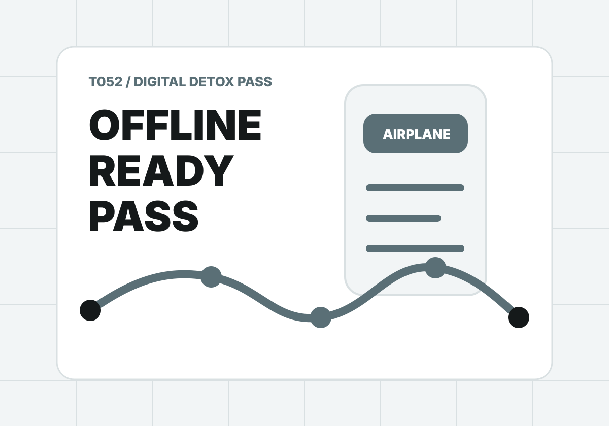

T052 / Digital detox pass
離線不是失聯，是把注意力還給現場。
想少滑手機，不能只靠意志力。你需要地圖、票券、翻譯、集合點與緊急備案先準備好，才有資格安心離線。
Prep checklist
離線前準備項
每一項都會影響你能不能安心離線。通行證不是口號，是出門前真的要做完的準備。
Result
先確認準備項，再生成你的離線旅行通行證。
結果會包含離線分數、出門前必做、手機使用規則、現場任務、緊急備案、分享文與 ChillOut prompt。

T052 / Digital detox pass
想少滑手機，不能只靠意志力。你需要地圖、票券、翻譯、集合點與緊急備案先準備好，才有資格安心離線。
Prep checklist
每一項都會影響你能不能安心離線。通行證不是口號，是出門前真的要做完的準備。
Result
結果會包含離線分數、出門前必做、手機使用規則、現場任務、緊急備案、分享文與 ChillOut prompt。